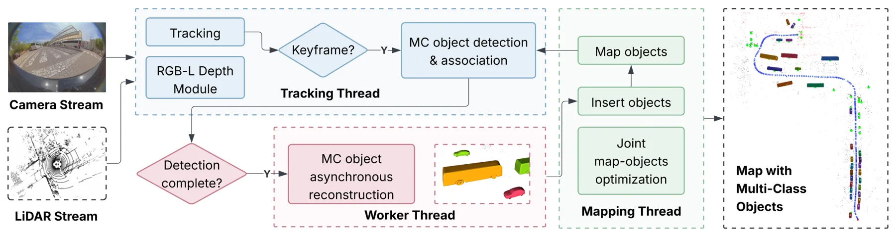
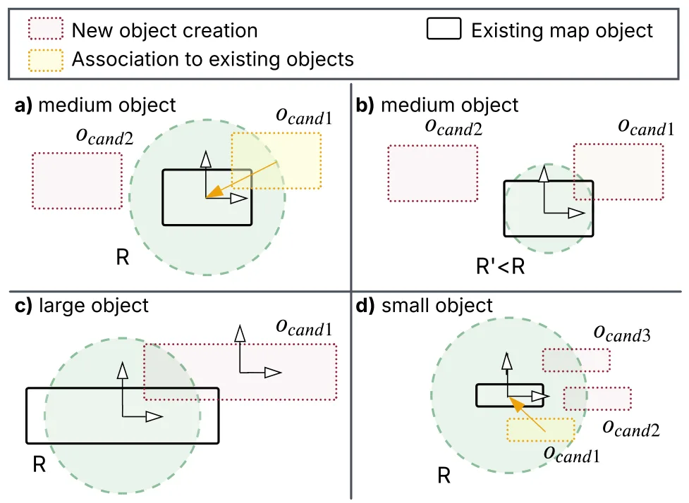
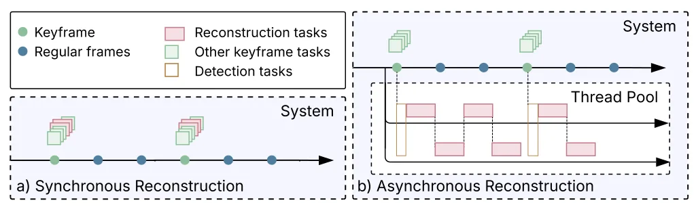
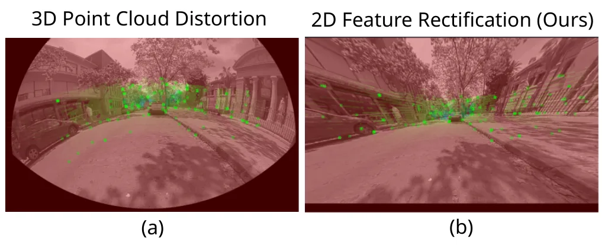
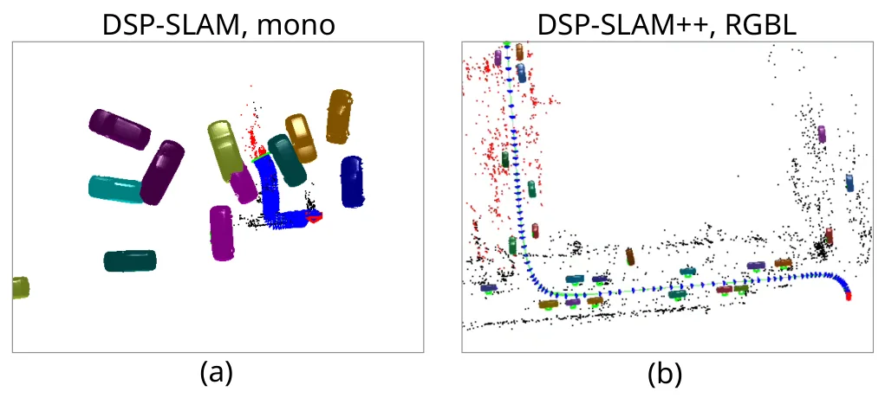
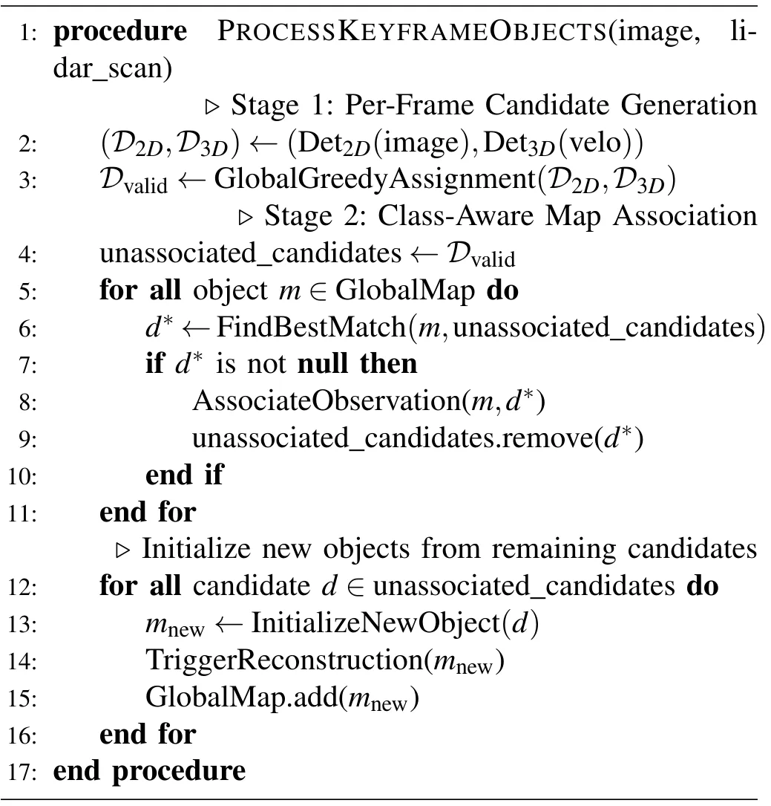
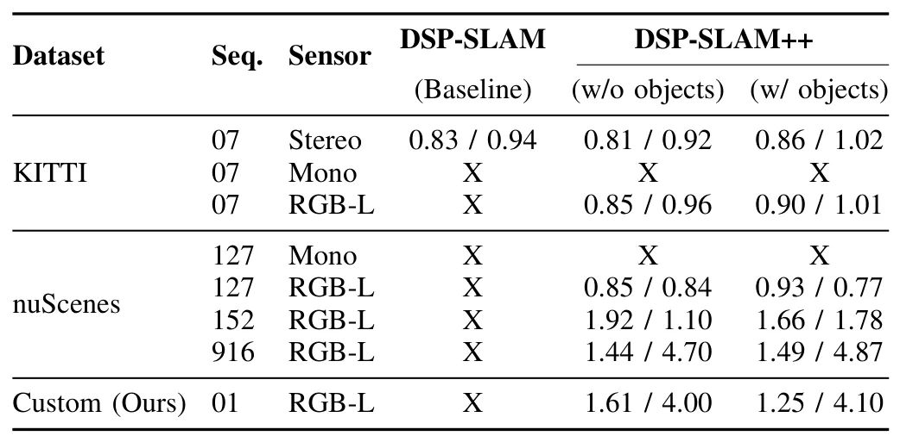
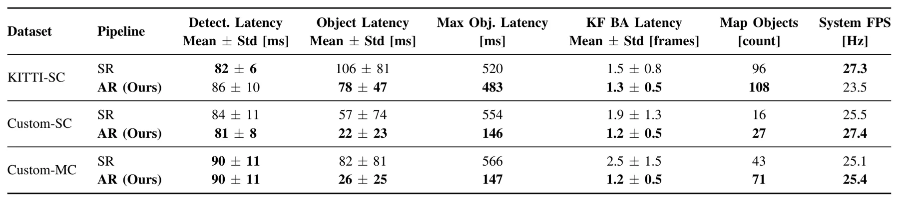

DSP-SLAM++：野外多类别高保真对象 SLAM 统一框架DSP-SLAM++: A Unified Framework for Multi-Class, High-Fidelity Object SLAM in the Wild
对象级 SLAM 工程价值高，且摘要声称开源、延迟降低明显；后续应检查代码完整度、多类别泛化、异步线程一致性和回环/重观测处理。
一句话工作总结
在 DSP-SLAM 上加入异步对象建图和鱼眼-LiDAR 融合适配，使多类别高保真对象 SLAM 更接近实时部署。
摘要
对象感知 SLAM 常在实时性、多类别支持和高保真语义对象模型之间取舍。DSP-SLAM++ 在 DSP-SLAM 基础上扩展出异步 mapping pipeline，以降低对象处理线程瓶颈，并针对单目鱼眼-LiDAR 传感器组合加入传感器融合适配。实验显示，系统能为多个对象类别生成细粒度、几何完整且语义一致的形状模型，同时相对 SOTA 基线将最大对象处理延迟降低最高 70%，支持具有挑战性的 25 Hz 多类别数据集。论文摘要给出开源代码地址 github.com/AUBVRL/DSP-SLAMpp，面向自动驾驶和机器人操作等真实应用。
Existing object-aware SLAM systems force a trade-off between real-time performance, multi-class support, and the generation of high-fidelity, semantically coherent object models. To address this trade-off, we present DSP-SLAM++, which extends the DSP-SLAM framework with an asynchronous mapping pipeline for real-time performance and dedicated sensor fusion adaptations for a monocular fisheye-LiDAR suite. Experiments demonstrate that our system generates fine-grained, geometrically-complete shapes for multiple object classes while eliminating severe mapping thread bottlenecks by reducing maximum object processing latency by up to 70\% compared to the state-of-the-art baseline, enabling robust, real-time performance on a challenging 25 Hz multi-class datasets. This work makes high-fidelity, multi-class object SLAM more practical for real-world applications like autonomous driving and robotic manipulation by enabling its use on platforms with common fisheye-LiDAR sensor setups. The open-source code is available at: [github.com/AUBVRL/DSP-SLAMpp].
中文解读摘录
- 英文题名：SA-LIVO: Efficient LiDAR-Inertial-Visual Odometry with Subspace-Aware Degeneracy Handling
- 作者：Yinong Cao, Xin He, Yuwei Chen, Shijie Liu, Chunlai Li, Jianyu Wang
- 类别/来源：cs.RO；20 pages, 12 figures, 5 tables；采集 score=15；阅读优先级=9.2/10。
- 一句话总结：在同一个 InEKF 优化环内对 LiDAR-visual 信息矩阵做特征分解，按可观测方向选择性融合视觉约束，让视觉主要补偿 LiDAR 退化方向而不干扰已约束方向。
- 为什么值得看：这篇非常贴近实际 LIVO 系统痛点：LiDAR 在走廊、平面、重复结构中退化，视觉又会受光照/纹理影响。SAIF 的“按 eigendirection 线性夹紧软门控”比传统 modality-level gating 更细粒度；摘要还声称视觉 Jacobian 可在迭代外复用，带来 12.3 ms/frame laptop CPU、26.8 ms/frame embedded ARM 且峰值内存降低 3.6–6.3x。后续应重点复核退化方向判定阈值、和 FAST-LIO/LIO-SAM/视觉直接法基线的公平性，以及代码开源进度。
- 标签：LIVO、LiDAR 退化、子空间融合、InEKF
- 链接：abs / PDF
图表/页面预览

{kind=link}

{kind=link}

{kind=link}

{kind=link}

{kind=link}

{kind=link}

{kind=link}

{kind=link}
